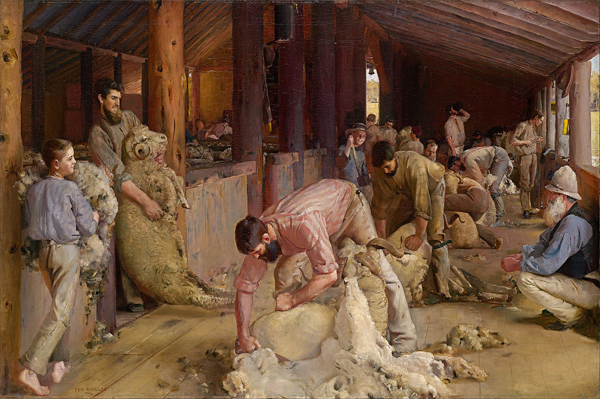

<head>
<meta charset="UTF-8" />
<meta name="keywords" content="drawing, painting" />
<meta name="description" content="drawings by Sunjy" />
<title>Sunjy</title>
<link rel="shortcut icon" type="image/x-icon" href="../../mImages/mCommon/favicon.ico" media="screen" />
<link rel="stylesheet" type="text/css" href="../../mCsses/mCommon/mCssA.css" />
<link rel="stylesheet" type="text/css" href="../../mCsses/mCommon/mCssB.css" />
<link rel="stylesheet" type="text/css" href="../../mCsses/mCommon/mCssC.css" />
<link rel="stylesheet" type="text/css" href="../../mCsses/mCommon/mCssD.css" />
<link rel="stylesheet" type="text/css" href="../../mCsses/mContent/mCssA.css" />
<link rel="stylesheet" type="text/css" href="../../mCsses/mContent/mCssB.css" />
<link rel="stylesheet" type="text/css" href="../../mCsses/mContent/mCssC.css" />
<link rel="stylesheet" type="text/css" href="../../mCsses/mContent/mCssD.css" />
</head>
<script type="text/javascript" src="../../mScripts/mContent/mContentAA.js" /></script>
<script type="text/javascript" src="../../mScripts/mContent/mContentAB.js" /></script>
<script type="text/javascript" src="../../mScripts/mContent/mContentAC.js" /></script>
<script type="text/javascript" src="../../mScripts/mContent/mContentAD.js" /></script>
<script type="text/javascript"></script> 
<script type="text/javascript">
document.write('<div class="mImgAbsolute"></div>');
/*
document.write('<p class="mFontSizeBColor" />From a white paper...</p>');
document.write('<table class="center"><tr><td>');
document.write('');
document.write('</td></tr></table>');
*/
</script>


<script type="text/javascript">
document.write('<p class="mFontSizeBColor" />Shearing the Rams</p>');
document.write('<p class="mFontSizeSColor" />“Shearing the Rams” by Tom Roberts was painted in 1890 and depicted the Shearing of the sheep in a timber shearing shed. <br><br>Roberts wanted to express the difficulty and fast working shearing process, and the physical masculinity is portrayed with the frequent arched bending of the shearers spread down into the depths of the shed.<br><br>At the same time, this was also a scene of excitement, and he has bathed the composition in the warm Australian sunlight. The two young boys capture the joy of the occasion.<br><br>One boy is on the left in bare feet, and the second is in the center of the composition, looking directly at the viewer with a white-toothed smile.<br><br>Tom Roberts made over 70 sketches during his first shearing season at a sheep station woolshed near Corowa. <br><br>During the next shearing season, Roberts worked on the canvas, and finally completed the painting in his studio in Collins Street, Melbourne. <br><br>The “Shearing the Rams” is one of the best-known and most-loved pictures in Australia. It is a masterpiece of Australian impressionism and an iconic representation of Australia’s significant wool industry.<br><br>Tom Roberts was born in England and immigrated to Melbourne in 1869 with his widowed mother and two younger siblings. <br><br>Art training began when he was 15 years old and when he was 25 years old traveled to England and Europe for overseas study.<br><br>He financed his international studies by selling paintings to the National Gallery. During his European education, he had been influenced by French impressionists and soon returned four years later in 1885, to continue painting in Australia.<br><br>In Australia, he found a growing nationalist spirit that preceded Federation, Roberts joined other Australian artists at Heidelberg near Melbourne.<br><br>They became known as the Heidelberg school. Leading painters included McCubbin and Streeton, and their endeavors led to the foundation of a national school for landscape painting.<br><br>At 40 years of age, he married Elizabeth Williams in 1896 and settled in Balmain, where they had a son. In 1903 Tom, with his family, returned to England in 1903 and stayed there for the next 16 years. <br><br>Roberts briefly returned to Australia in 1919 and then, in 1923, decided to move back permanently to England. Roberts’ first wife died in 1927, and he re-married in 1928 to a long-time friend, Jean Boyes.<br><br>Three years later and at 75 years of age, he died in 1931 of the effects of cancer.<br></p>');
document.write('<table class="center" /><tr><td>');
document.write('<br>Roberts wanted to express the difficulty and fast working shearing process, and the physical masculinity is portrayed with the frequent arched bending of the shearers spread down into the depths of the shed.<br><br>At the same time, this was also a scene of excitement, and he has bathed the composition in the warm Australian sunlight. The two young boys capture the joy of the occasion.<br><br>One boy is on the left in bare feet, and the second is in the center of the composition, looking directly at the viewer with a white-toothed smile.<br><br>Tom Roberts made over 70 sketches during his first shearing season at a sheep station woolshed near Corowa. <br><br>During the next shearing season, Roberts worked on the canvas, and finally completed the painting in his studio in Collins Street, Melbourne. <br><br>The “Shearing the Rams” is one of the best-known and most-loved pictures in Australia. It is a masterpiece of Australian impressionism and an iconic representation of Australia’s significant wool industry.<br><br>Tom Roberts was born in England and immigrated to Melbourne in 1869 with his widowed mother and two younger siblings. <br><br>Art training began when he was 15 years old and when he was 25 years old traveled to England and Europe for overseas study.<br><br>He financed his international studies by selling paintings to the National Gallery. During his European education, he had been influenced by French impressionists and soon returned four years later in 1885, to continue painting in Australia.<br><br>In Australia, he found a growing nationalist spirit that preceded Federation, Roberts joined other Australian artists at Heidelberg near Melbourne.<br><br>They became known as the Heidelberg school. Leading painters included McCubbin and Streeton, and their endeavors led to the foundation of a national school for landscape painting.<br><br>At 40 years of age, he married Elizabeth Williams in 1896 and settled in Balmain, where they had a son. In 1903 Tom, with his family, returned to England in 1903 and stayed there for the next 16 years. <br><br>Roberts briefly returned to Australia in 1919 and then, in 1923, decided to move back permanently to England. Roberts’ first wife died in 1927, and he re-married in 1928 to a long-time friend, Jean Boyes.<br><br>Three years later and at 75 years of age, he died in 1931 of the effects of cancer.<br>" />');
document.write('</td></tr></table>');
</script>


